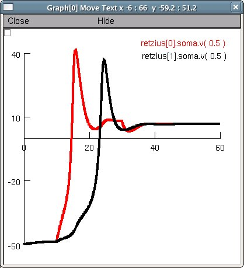

This is the readme for the model associated with the paper Vazquez Y, Mendez B, Trueta C, De-Miguel FF (2009) Summation of Excitatory Postsynaptic Potentials in Electrically-Coupled Neurons. Neuroscience These model files were supplied by Dr De-Miguel. Demo: Either auto-launch from ModelDB or download and extract the zip archive. Then under mswin: ------ Compile the mod files with mknrndll, then double click on mosinit.hoc linux/unix: ----------- Compile the mod files with nrnivmodl. Then type "nrngui mosinit.hoc". Mac OS X: --------- Drag and drop the newly created folder onto the mknrndll icon. Drag and drop the mosinit.hoc file onto the nrngui icon. Once the simulation has started: -------------------------------- Press Init & Run and you should see a picture similar to: 